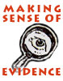

Secrets of Great History Teachers
In these interviews distinguished teachers share their strategies and techniques. Good teaching is more often honored in rhetoric than reality. And great teachers are generally known locally within their own schools, but less often to a larger group of national colleagues. Our goal in this section is, in part, to identify and honor those people who have taught with excellence, dedication, and distinction. But more than that, we believe that these teachers have lessons to offer the rest of us and that there are remarkably few forums for hearing their wisdom.
There are 17 matching records, sorted by date of interview.
Displaying matches 1 through 17 .
Interview with Allyson M. Poska
Allyson M. Poska, Professor of History at the University of Mary Washington in Fredericksburg, Virginia, received her Ph.D. in history at the University of Minnesota in 1992, with an M.A. from Brown University, and a B.A. at Johns Hopkins University. Her specialties include womens history, colonial Latin American history, and the history of early modern Europe, especially early modern Spain. Her publications include
Women and Authority in Early Modern Spain: The Peasants of Galicia, for which she won the Roland H. Bainton Book Prize in early modern history and theology;
Regulating the People: The Catholic Reformation in Seventeenth-Century Spain; and
Women and Gender in the Western Past, coauthored with Katherine French. She has served as editor of the Women and Gender in the Early Modern World monograph series with Ashgate Press. She received a National Endowment for the Humanities Fellowship for College Teachers and Independent Scholars for 2000–2001. She teaches courses in Western Civilization; Introduction to the Study of History; classes on the Renaissance, the Reformation, and the history of Spain; and seminars on topics such as daily life, gender, society, and development, and women, sex, and family.
Resources Available: TEXT.
Interview with Nancy A. Hewitt
Nancy A. Hewitt, Professor of History and Womens Studies at Rutgers University, received her Ph.D. in History from the University of Pennsylvania in 1981. She has written extensively on American womens activism and womans rights in the nineteenth and twentieth centuries. Her publications include Womens Activism and Social Change: Rochester, New York, 1822–1872; Southern Discomfort: Womens Activism in Tampa, Florida, 1880s-1920s; and most recently, “Re-rooting American Womens Activism: Global Perspectives on 1848.” Prof. Hewitt is also editor of Blackwells Companion to American Womens History and of Women, Families and Communities, a two-volume collection geared to the United States history survey. She has also worked as a historian at the Seneca Falls Womans Rights National Historical Park; led numerous workshops on integrating race and gender into the curriculum; and participated with a group of womens historians in a project housed at SUNY-Binghamton to provide web-based teaching materials on women and social movements in the United States.
Resources Available: TEXT.
Interview with Doris M. Meadows
Doris M. Meadows graduated from Montclair State Teachers College where she began her career as a student teacher in American History. She was awarded a three-year NDEA fellowship in Social Studies at NYU. Subsequently, she taught African American History at a Community College. For more than a decade she worked in libraries and archives on both coasts and did volunteer teaching, including co-teaching a special seminar on Women’s History at Stanford University. In 1984, she completed her PhD with a dissertation entitled
Creed of Caste: Journalism and the Race Question in the Progressive Era, 1900–1914 and began teaching Social Studies in the City School District in Rochester, New York. In 1986 she transferred to Wilson Magnet High School, where she taught A.P. American History, Regents, and Honors U. S. History and Government courses as well as a series of Humanities courses for 16 years. She has also taught African American and American history at Monroe Community College. She is currently substitute teaching in the Rochester School District and writing a book. Doris M. Meadows was the 2001 recipient of the Organization of American Historian’s Mary K. Bonsteel Tauchau Pre-Collegiate Teaching Award.
Resources Available: TEXT.
Interview with Maurice Butler
Maurice Butler teaches U.S. history at Theodore Roosevelt Senior High School in the District of Columbia. He has been teaching in the District of Columbia Public School system since 1974. At Roosevelt High School, he is the Change Facilitator, a DC Area Writing Project Writing Consultant, the head Tennis Coach, one of the sponsors for the school newspaper, and he is the coordinator of the 9th Grade Prep Academy. In addition to teaching, he is currently pursuing his Ph.D. at Berne University in Curriculum and Instruction.
Resources Available: TEXT.
Interview with Charles Errico
Charles Errico received his Ph.D. in American diplomatic history from the
University of Maryland. He is the assistant dean and professor of history
at the Woodbridge Campus of Northern Virginia Community College. He also
teaches in the graduate history program at George Mason University. Over
the last twenty years, Dr. Errico has won teaching awards from the
Educational Foundation, the Alumni Association, and the Carnegie Institute.
He most recently co-edited a popular American history readings book,
Portrait of America, that was published by Houghton-Mifflin in 2003.
Resources Available: TEXT.
Interview with David Silberberg
David Silberberg has taught history and social studies at Satellite Academy, an alternative high school in New York City, for the past 17 years. He started his career teaching English and social studies in Ghana, West Africa.
Resources Available: TEXT.
Interview with Michele Forman
Michele Forman was the 2001 National Teacher of the Year. She is currently teaching history and social studies at Middlebury Union High School in Middlebury, Vermont. She began her teaching career in the Peace Corps in Nepal from 1967–1969.
Resources Available: TEXT, IMAGES.
Interview with Craig Derksen
Craig Derksen has taught overseas for nine years on many different continents. He is currently teaching history at Dharan Academy High School in Dharan, Saudi Arabia. He is also coordinating curriculum for the social studies and language arts departments, and acts as the school’s national honor society advisor.
Resources Available: TEXT.
Interview with Jay Pecora
Jay Pecora has taught at Satellite Academy for the past
nine years. He has a BFA from the DePaul/Goodman School of Drama, an MA from the
Graduate Center, City University of New York and is working on a PhD in
Educational Theatre from New York University. In addition to teaching at
Satellite, Jay teaches a “Methods of Teaching Social Studies” class for the
Department of Teaching and Learning at NYU as an adjunct
professor.
Resources Available: TEXT.
Interview with Bill Bigelow
Bill Bigelow has taught high school in Portland, Oregon since 1978. Between 1991 and 1993, he led workshops with teachers throughout the country using the Columbus myth to draw attention to racial biases in the school curriculum. He is an editor of the education reform journal,
Rethinking Schools, and is the author of
Strangers in Their Own Country: A Curriculum Guide on South Africa (Africa World Press, 1985), and
The Power in Our Hands: A Curriculum on the History of Work and Workers in the United States (with Norm Diamond, Monthly Review Press, 1988). He has co-edited four books with Rethinking Schools:
Rethinking Our Classrooms: Teaching for Equity and Justice (1994),
Rethinking Columbus: The Next 500 Years (1998),
Rethinking Our Classrooms: Teaching for Equity and Justice, Volume 2 (2001), and, with Bob Peterson,
Rethinking Globalization: Teaching for Justice in an Unjust World (2002). Bigelow has also authored several teaching guides for films and videos, including most recently for the Academy Award-nominated film,
Regret to Inform (1998).
Resources Available: TEXT.
Interview with Orville Vernon Burton
Orville Vernon Burton is Professor of History and Sociology at the University of Illinois, Urbana-Champaign (UIUC). He is also a Senior Research Scientist at the National Center for Supercomputing Applications where he heads the initiative for Humanities and Social Science projects. His major areas of research are race relations, family, community, and religion. His work has appeared in more than a hundred articles in a variety of journals. He is the author or editor of six books (one of which is on CD-ROM), including
In My Father’s House Are Many Mansions: Family and Community in Edgefield, South Carolina (1985). He is the current President of the Agricultural History Society. Recognized with teaching awards at the departmental, school, college, and campus levels, he was designated one of the first three UIUC University “Distinguished Teacher/Scholars” in 1999. He was also selected nationwide as the 1999 U.S. Research and Doctoral University Professor of the Year (presented by the Carnegie Foundation and by CASE). In the 2000–2001 academic year, he was named a Carnegie Scholar as well as Mark Clark Distinguished Visiting Professor of History at the Citadel.
Resources Available: TEXT.
Interview with Beverly San Augustín
Beverly San Augustín has taught for more than 20 years in Guam at both middle and high schools. The Council of Chief State School Officers recently named her State Teacher of the Year in recognition of her energy, creativity, and devotion to teaching. She teaches a range of courses, including U.S. History, Guam History, and American Government.
Resources Available: TEXT.
Interview with Patricia Oldham
Pat Oldham has spent almost her entire teaching career at one school, Hostos Community College of the City University of New York, where she is a lecturer in the Behavioral-Social Science Department. She was a member of the original faculty at Hostos when the college opened in 1970 and over the years she helped to create much of the Social Sciences curriculum, including courses in United States history, African-American history, and interdisciplinary social science. She has worked extensively with the American Social History Project and has been twice appointed CUNY Faculty Fellow to work with it. In addition to her substantial teaching responsibilities, she continues to work part-time on a dissertation entitled
David Ruggles: Afro-Yankee in an Antebellum World of Reform.Resources Available: TEXT.
Interview with Philip Bigler
Philip Bigler teaches history and social studies at Thomas Jefferson High School for Science and Technology in Northern Virginia. He began teaching more than twenty years ago and has taught at a number of different high schools in the Washington metropolitan area. He also took a two-year break from his teaching to serve as historian for Arlington National Cemetery. That work led to his publication of two of his four books:
Hostile Fire: The Life and Death of Lt. Sharon Ann Lane, and
In Honored Glory: Arlington National Cemetery, the Final Post. Bigler’s teaching talents have been recognized with the
Washington Post Agnes Meyer Outstanding Teaching Award, the Hodgson Award for Outstanding Teaching of Social Studies, the Norma Dektor Award for most Influential Teacher at McLean High School, and the United States Capitol Historical Society Outstanding Teacher/Historian Award. In 1998, he was named “National Teacher of the Year” in the annual competition sponsored by The Council of Chief State School Officers and Scholastic, Inc.
Resources Available: TEXT.
Interview with James O. Horton
Jim Horton is Benjamin Banneker Professor of American Studies and History, George Washington University and the Director of the African-American Communities Project at the Smithsonian’s National Museum of American History. He is the author of numerous articles and five books, including,
Free People of Color: Inside the African-American Community, (1993), and
In Hope of Liberty: Culture, Protest, and Community Among Northern Free Blacks, 1790–1806, which was co-authored with Lois E. Horton and published in 1997. He has been extremely active as a public historian, serving as adviser to numerous museums and film projects and as chair of National Park Service Advisory Board. He has also had a distinguished teaching career over the past twenty-five years; in 1994, he received the Trachtenberg Distinguished Teaching Award from George Washington University; in 1996, he was named CASE Professor of the Year for the District of Columbia by the Carnegie Foundation. He is interviewed here by Roy Rosenzweig, Director of the Center for History and New Media at George Mason University.
Resources Available: TEXT.
Interview with Leon F. Litwack
Leon F. Litwack is Alexander F. and May T. Morrison Professor of American History at the University of California, Berkeley, where he has spent almost his entire career, earning a B.A. in 1951 and a Ph.D. in 1958 and teaching since 1964. Litwack’s many publications include
North of Slavery: The Free Negro in the Antebellum North (1961),
Been in the Storm So Long: The Aftermath of Slavery (winner of both the Pulitzer Prize and National Book Award), and most recently,
Trouble in Mind: Black Southerners in the Age of Jim Crow (1998). Litwack has received many honors in recognition of his distinguished and path-breaking scholarship, including the Pulitzer Prize in History, the Francis Parkman Prize, the American Book Award, and election to the presidency of the Organization of American Historians. Perhaps less well-known is that Litwack has also been an enormously popular and influential teacher, who has received two Distinguished Teaching Awards and, as he notes in this interview, has taught more than 30,000 Berkeley undergraduates.
Resources Available: TEXT.


Investigating US History
City University of New York.
This website makes available teaching modules that faculty members from CUNY have written on various subjects in American history. Each of the modules is a detailed recipe for teaching about a subject by having college students use various primary sources—documents, photos, drawings, oral history transcriptions, audio, and video, which are linked to their online locations. Each module has an introductory essay, links to primary sources, and a description by the author of the module, suggesting, in steps, how to use the sources in a class, including possible questions to pose to students, additional assignments, and recommendations on how the readings might be added into various kinds of courses. Lesson module subjects include: 18th-century slave society, Stamp Act protests, drafting and debating the Constitution, antebellum Evangelicalism, John Brown’s raid, emancipation during the Reconstruction, the Spanish-Cuban-American War, women in 19th-century public life, the Triangle Fire, labor unrest in the Great Depression, the Black Freedom Movement, and Lyndon Johnson in 1960s political culture.
Resources Available: TEXT.
Website last visited on 2009-01-13.